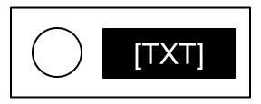
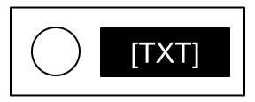

Annexe A : Identification des Indicateurs
Des indicateurs, composés d’un libellé et d’une lumière, peuvent se trouver sur les côtés de la bombe.
Indicateurs ordinaires :
- SND
- CLR
- CAR
- IND
- FRQ
- SIG
- NSA
- MSA
- TRN
- BOB
- FRK
Des indicateurs, composés d’un libellé et d’une lumière, peuvent se trouver sur les côtés de la bombe.
